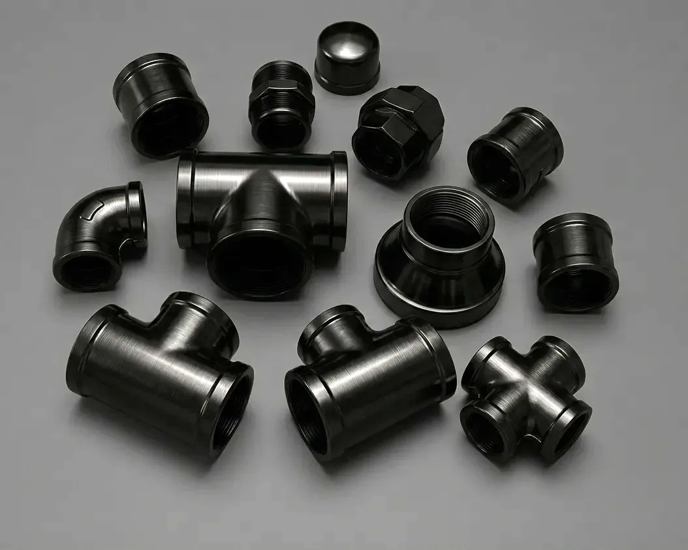

Gururaj Infradesigns is a trusted ASTM A860 WPHY 52 Pipe Fittings Manufacturer and Supplier in India, offering high-yield carbon steel elbows, tees, reducers, pipe caps, stub ends, and crosses for oil & gas pipelines, power projects, and high-pressure industrial piping applications.
ASTM A860 WPHY 52 Pipe Fittings are high-strength carbon steel buttweld fittings designed for demanding pipeline and pressure piping applications. These fittings are widely used in oil & gas transmission systems, petrochemical facilities, power generation projects, and industrial pipelines where superior mechanical properties and structural reliability are required. Gururaj Infradesigns is a trusted ASTM A860 WPHY 52 Pipe Fittings Manufacturer in India, supplying quality fittings engineered for critical service conditions.
Our product range includes elbows, tees, reducers, pipe caps, stub ends, and crosses manufactured in accordance with ASTM and ASME standards. Designed to withstand high pressure and mechanical stress, ASTM A860 WPHY 52 Pipe Fittings provide dependable performance and long-term service life in demanding industrial environments.

ASTM A860 WPHY 52 is a high-yield carbon steel specification covering wrought buttweld fittings intended for high-pressure transmission and distribution systems. The grade offers higher yield strength than WPHY 42 and standard carbon steel grades, making it suitable for applications where enhanced strength and durability are essential. As part of the broader range of Carbon Steel Pipe Fittings, ASTM A860 WPHY 52 is commonly specified for critical pipeline infrastructure and energy-sector projects.
ASTM A860 WPHY 52 Pipe Fittings combine excellent weldability with superior mechanical properties, allowing them to perform reliably in challenging operating conditions. Their ability to handle higher loads and pressures makes them a preferred choice for industrial projects requiring long-term operational reliability.
| Parameter | Details |
|---|---|
| Material Grade | ASTM A860 WPHY 52 |
| Product Types | Elbow, Tee, Reducer, Pipe Cap, Stub End, Cross |
| Standards | ASTM A860 / ASME B16.9 |
| Size Range | ½" NB to 48" NB |
| Schedule Range | SCH 10 to SCH XXS |
| Manufacturing Type | Seamless & Welded |
| Connection Type | Butt Weld |
| Testing | PMI, Hydro Test, Visual Inspection |
| Certification | EN 10204 3.1 / MTC Available |
ASTM A860 WPHY 52 Pipe Fittings provide higher yield and tensile strength compared to lower carbon steel grades, making them suitable for demanding pipeline applications.
The enhanced mechanical properties allow these fittings to perform efficiently in high-pressure transmission and process piping systems.
Despite their increased strength, WPHY 52 fittings maintain excellent weldability, simplifying fabrication and installation processes.
These fittings are commonly selected for critical infrastructure projects where safety, durability, and long-term performance are important.
Their robust construction and high-strength properties help reduce maintenance requirements and support long operational life.
| Element | Composition (%) |
|---|---|
| Carbon | Max 0.30 |
| Manganese | Max 1.40 |
| Phosphorus | Max 0.030 |
| Sulfur | Max 0.030 |
| Silicon | Max 0.40 |
| Chromium | As Per ASTM Specification |
| Nickel | As Per ASTM Specification |
| Molybdenum | As Per ASTM Specification |
| Property | Value |
|---|---|
| Tensile Strength | 515 MPa Min |
| Yield Strength | 360 MPa Min |
| Elongation | 22% Min |
| Grade Designation | WPHY 52 |
These fittings are widely used in high-pressure transmission lines transporting crude oil, natural gas, and petroleum products over long distances.
ASTM A860 WPHY 52 Pipe Fittings are used in process piping systems requiring enhanced mechanical strength and operational reliability.
Power projects utilize these fittings in high-pressure piping systems where durability and structural integrity are critical.
Manufacturing and heavy industrial facilities rely on WPHY 52 fittings for applications requiring dependable performance under pressure.
| Property | ASTM A234 WPB | ASTM A860 WPHY 42 | ASTM A860 WPHY 52 |
|---|---|---|---|
| Material Grade Category | Standard Carbon Steel | High Yield Carbon Steel | High Yield Carbon Steel |
| Mechanical Strength | Good | High | Very High |
| Load-Bearing Capability | Moderate | High | Excellent |
| Pressure Resistance | Moderate | High | Superior |
| Toughness | Good | Very Good | Excellent |
| Critical Pipeline Applications | Limited | Suitable | Preferred |
| Heavy-Duty Service | Moderate | Good | Excellent |
| Service Life | Long | Longer | Longest |
| Procurement Cost | Economical | Moderate | Premium |
| Recommended For | General Piping | Pipeline Networks | High-Pressure Pipeline Systems |
ASTM A860 WPHY 52 Pipe Fittings offer the highest mechanical strength among these commonly used carbon steel grades. While ASTM A234 WPB Pipe Fittings are widely used for general industrial service and ASTM A860 WPHY 42 Pipe Fittings provide a balance of strength and cost, WPHY 52 is preferred for critical pipeline systems requiring superior pressure resistance and long-term reliability.
| Finish | Benefits |
|---|---|
| Black Painted | Protection during storage and transportation |
| Anti-Rust Oil Coated | Helps prevent surface corrosion |
| Shot Blasted | Improves surface cleanliness |
| Bare Finish | Suitable for fabrication and welding applications |
These surface treatments help maintain product quality and protect fittings during transportation, storage, and installation.
Gururaj Infradesigns supplies ASTM A860 WPHY 52 Pipe Fittings in various sizes and specifications to support demanding industrial and pipeline projects. Our products are supplied to EPC contractors, pipeline companies, engineering firms, and industrial buyers seeking reliable high-strength carbon steel fittings.
With a focus on quality, timely delivery, and customer satisfaction, we support projects requiring dependable piping solutions for critical operating environments.
At Gururaj Infradesigns, quality remains an important part of our manufacturing and supply process. All pipe fittings undergo inspection for dimensional accuracy, workmanship, and material compliance before dispatch.
As an ISO Certified Company, we are committed to supplying reliable piping components that meet industrial expectations for quality, consistency, and performance.
Selecting the right pipe fitting grade depends on operating pressure, temperature, pipeline design, and service conditions. Choosing the correct material helps improve system reliability, safety, and long-term performance. Our team can assist in selecting the most suitable fitting grade, size, and specification based on your project requirements. We work closely with engineers, EPC contractors, fabricators, and industrial buyers to provide practical guidance and dependable piping solutions for critical industrial applications.